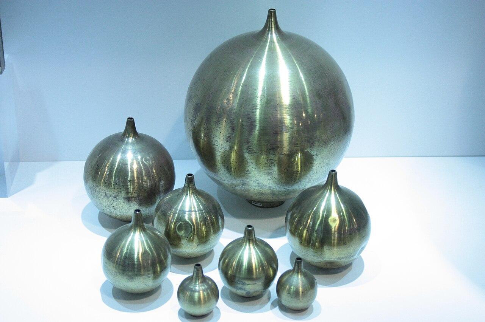
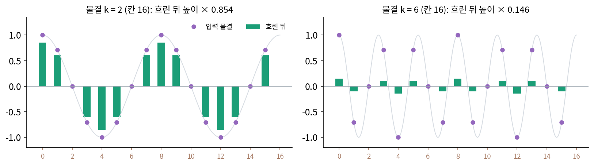
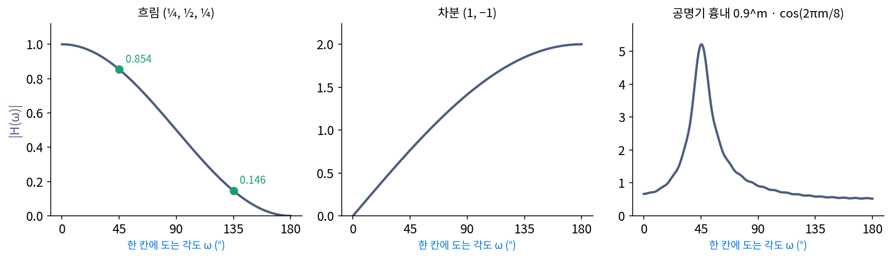
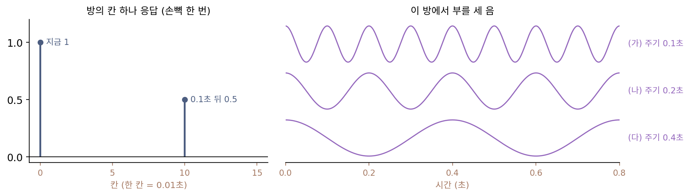
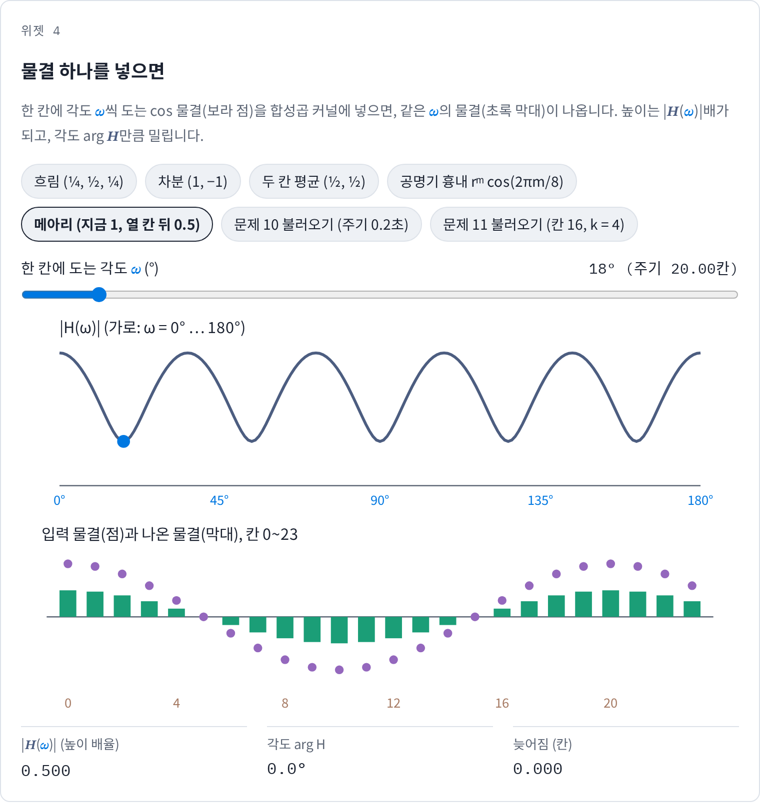
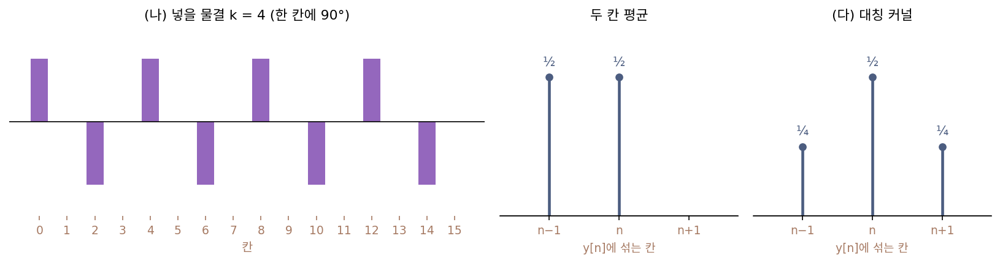
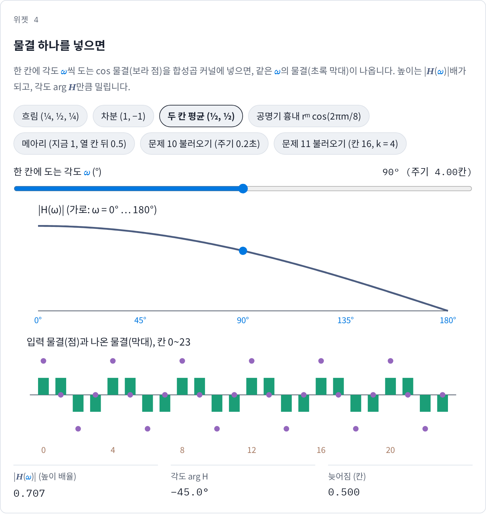
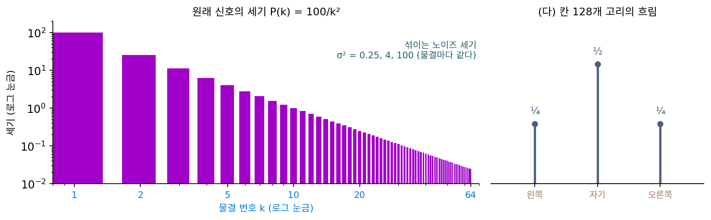

주파수 응답: 필터가 물결마다 몇 배 하나
이어폰 상자에는 「20 Hz ~ 20 kHz」 같은 숫자가 적혀 있고, 카메라 렌즈 평가에는 가는 줄무늬를 얼마나 살리는지 그린 곡선이 붙는다. 둘 다 「어떤 주파수의 물결을 몇 배로 내보내나」를 적은 것이다. 필터는 물결마다 고윳값을 곱했지만, 지금까지는 고리 위의 물결 번호 k만 보았다. 칸 수와 상관없이, 합성곱 커널의 숫자 몇 개만 보고 어떤 주파수의 물결이 살아남는지 한눈에 읽을 수는 없을까?
역사: 헬름홀츠의 공명기
같은 높이의 음을 바이올린과 플루트로 내면 소리가 다르다. 헬름홀츠(Hermann von Helmholtz)는 1863년 『음악 이론의 생리학적 기초로서의 음 감각론』에서 두 악기의 소리 차이를 배음(기본 음의 정수배 주파수로 떠는 물결)들의 세기 차이로 설명했다. 그런데 이 설명을 시험하려면 한 음 안에 섞인 약한 배음을 귀로 하나씩 가려 들어야 했다. 그는 그 일이 이전에는 잘 훈련된 음악가의 귀로 애써 주의를 기울여야만 가능했고, 많은 물리학자와 음악가조차 끝내 해내지 못했다고 적었다(이 대목과 아래 공명기 대목은 1877년 독일어 4판을 옮긴 엘리스의 영어 번역판에서 옮겼고, 1863년 초판의 문장과는 대조하지 않았다).
헬름홀츠가 내놓은 도구는 공명기였다. 유리나 금속으로 만든 속이 빈 공이나 관에 구멍이 둘 있는데, 하나는 날카로운 테두리로 소리를 받고, 다른 하나는 깔때기 꼴로 귀에 꽂는다. 그는 귀에 꽂는 쪽에 녹인 봉랍을 바르고, 손가락을 데지 않을 만큼 식었을 때 귀 입구에 눌러 모양을 떴다고 적었다. 한쪽 귀를 막고 다른 귀에 공명기를 대면 주변의 소리는 대부분 크게 줄어드는데, 공명기의 고유한 음이 울리면 그 음이 「귀 안으로 아주 세차게 울려 들어온다」. 그래서 음악에 귀가 없는 사람도 많은 소리 가운데서 약한 음 하나를 골라 들을 수 있었고, 바람 소리나 마차 바퀴 소리, 물 튀는 소리에서도 그 음이 들려왔다고 한다. 공이 클수록 낮은 음에 울렸으므로, 크기를 차례로 맞춘 공명기 한 벌이 한 음 안의 배음들을 하나씩 짚는 도구가 되었다. 공명기 하나는 한 주파수의 물결만 크게 키우는 필터였다.


배음을 하나씩 가려 듣는 거면 지금은 휴대폰 앱으로 스펙트럼을 띄우면 바로 보이잖아요. 공을 귀에 꽂을 것까지 있었어요?

1863년에는 소리를 전기 신호로 바꾸는 마이크가 없었어요. 벨의 전화기가 1876년, 에디슨의 축음기가 1877년이니 그보다 십몇 년 앞이에요. 소리를 받아 적을 장치가 없으니 귀가 유일한 측정기였죠.

음, 그런데 귀도 귀대로 문제예요. 바이올린 한 음을 들으면 하나로 들리지, 배음이 따로 들리지 않으니까요. 훈련된 음악가도 애를 써야 했다는 게 그 얘기고요.

그래요. 그래서 헬름홀츠는 귀를 훈련하는 대신 귀 앞에 거르는 장치를 달았어요. 공명기를 대면 다른 소리는 크게 줄고 자기 음만 세게 울려 들어오니까, 듣는 사람은 울리는지 아닌지만 가리면 됐어요.

아, 그러면 크기가 다른 공을 하나씩 바꿔 대 가며 배음 목록을 손으로 만든 거네요. 앱이 한 번에 그리는 막대그래프를 공 한 벌로 한 칸씩 채운 셈이고요.

그런데 공명기 하나가 딱 한 음만 키우지는 않을 것 같아요. 근처 음은 얼마나 키우는지, 주파수마다 몇 배인지를 곡선으로 그리면 어떤 모양일까요?
흐림에 물결을 넣어 보기
칸 16개 고리에 cos 물결을 넣고 흐림(¼, ½, ¼)을 걸어 보자. 고리를 두 번 도는 물결(k = 2, 한 칸에 45°씩 돈다)은 모양 그대로 높이만 0.854배가 되고, 여섯 번 도는 물결(k = 6, 한 칸에 135°)은 0.146배가 된다. cos 물결은 반대로 도는 두 화살표 eiωn과 e−iωn의 평균이고, 대칭인 흐림 합성곱 커널은 두 화살표에 같은 실수를 곱하므로 cos 물결도 그 실수배로 커지거나 작아진다.

이 배율은 칸 수와 상관없이 한 칸에 도는 각도만으로 정해진다. 합성곱 커널 (¼, ½, ¼)에 한 칸에 각도 ω(오메가)씩 도는 화살표를 넣으면, 출력은 입력 화살표에 ¼ eiω + ½ + ¼ e−iω = ½ + ½ cos ω를 곱한 것이다. ω = 0°이면 1, 45°이면 0.854, 90°이면 0.5, 135°이면 0.146, 180°이면 0이다. 일반적으로 쓰면 다음과 같다.
필터가 한 칸에 각도 ω씩 도는 물결에 곱하는 복소수 H(ω)를 주파수 응답 (필터가 물결마다 곱하는 배율 / frequency response)이라 한다. 고리 위의 고윳값 H[k]는 이 곡선을 ω = 2πk/N 자리에서 읽은 값이다. 크기 |H|는 물결을 몇 배로 키우는지, 각도 arg H는 물결을 얼마나 미는지 알려 준다.
곡선을 그려 보면 필터의 성격이 한눈에 보인다. 흐림은 ω = 0에서 1이고 180°로 갈수록 0으로 내려가므로 느린 물결만 남긴다. 차분 (1, −1)은 |H| = 2|sin(ω/2)|로 거꾸로 평탄한 신호를 지우고 칸마다 뒤집히는 물결을 두 배로 키운다. 헬름홀츠의 공명기를 칸으로 흉내 내면, 한쪽으로만 이어지는 합성곱 커널 h[m] = 0.9m cos(2πm/8)(m = 0 … 39)처럼 「한 번 두드리면 주기 8칸으로 울리다 잦아드는 응답」이 된다. 이 합성곱 커널의 |H|는 ω = 45.3°(주기 7.95칸)에서 5.21로 솟고, 꼭대기의 절반을 넘는 폭은 35.5°에서 56.8°까지다. 합성곱 커널을 m = 0 … 399로 길게 이어 두고 견주면, 0.9일 때 꼭대기 5.29·폭 21.0°이고, 0.97로 바꿔 더 오래 울리게 하면 꼭대기는 16.9로 높아지고 폭은 6.0°로 좁아진다. 오래 울리는 공명기일수록 더 좁은 주파수 대역만 골라 키운다.

ML에서: 위너 필터는 물결마다 곱하는 배율이다
노이즈 섞인 신호에서 원래 신호를 가장 잘 짐작하는 문제를 생각하자. 신호의 통계가 자리를 옮겨도 같고 노이즈도 그렇다면, 제곱 오차를 가장 작게 하는 선형 디노이징 연산은 그 자체로 선형 시불변 필터이고, 물결마다 곱하는 배율은 신호와 노이즈의 세기만으로 정해진다. 위너 필터다.
신호 세기가 굵은 무늬일수록 큰 P(k) = 100/k²이고 노이즈 세기가 σ² = 1이면, 배율은 k = 1에서 0.990, k = 5에서 0.8, k = 10에서 0.5, k = 20에서 0.2다. 신호가 노이즈보다 센 물결은 살리고 약한 물결은 지운다. 결국 대칭이 축(물결)을 고르고, 데이터의 파워 스펙트럼이 축마다의 배율을 고른다. 디퓨전 모델의 디노이저(노이즈 섞인 그림을 받아 원래 그림을 짐작하는 신경망)는 이보다 훨씬 복잡한 비선형 함수지만, 그림 분포를 정규분포로 근사하면 이 배율이 가장 좋은 디노이저가 된다.
문제 10. 손뼉 한 번으로 방 알기
작은 방에서 손뼉을 한 번 치면 지금 크기 1의 소리, 0.1초 뒤 크기 0.5의 메아리가 들린다(그 뒤는 무시한다). 칸 하나를 0.01초로 잡으면 이 방의 칸 하나 응답은 「칸 0 에 1, 칸 10 에 0.5」다. (가) 이 방에서 주기 0.1초인 음을 부르면 크기가 몇 배로 들리는가? (나) 주기 0.2초인 음은? (다) 주기 0.4초인 음은? 이 방에서 크게 울리는 음과 죽는 음의 규칙을 말하라. (위젯 4의 「문제 10 불러오기」로 확인해 보자.)

메아리가 더해지니까 어느 음이든 1.5배겠죠. 1 + 0.5요.
주기 0.2초인 음에서, 0.1초 전 소리는 지금 소리와 비교해 어떤 상태죠?

반 주기 전이니까 뒤집혀 있어요. 메아리가 지금 소리를 깎아서 1 − 0.5 = 0.5배네요. 주기 0.1초는 딱 한 주기 전이라 같은 모양이 더해져서 1.5배고요. 어느 음이든 같은 게 아니었어요.
(다)는 0.1초가 4분의 1 주기라 메아리가 90° 어긋나. 화살표로 보면 1과 0.5i의 합이니까 크기가 √(1 + 0.25) = 1.118배야.
세 음을 나란히 놓고 보면, 어떤 음이 1.5배가 되죠?

음, 0.1초 전이 딱 한 주기의 정수배인 음이요. 주파수 응답으로 쓰면 |1 + 0.5 e−iω·10|이고, ω × 10칸이 360°의 배수인 음, 주기가 0.1초, 0.05초, …처럼 0.1초를 정수로 나눈 음이 1.5배예요.
그 사이에 반 바퀴 어긋나는 음은 0.5배고.

그래요. 손뼉 한 번의 응답이 모든 음의 운명을 정했어요. 칸 하나 응답이 연산 전체를 정한다는 걸 귀로 들은 거예요.

화장실에서 노래하면 어떤 음만 유난히 웅웅 울리던 게 이거였네요. 그 음이 화장실의 공명기였어요.

문제 11. 두 칸 평균은 물결을 민다
칸 16개 고리에서 두 칸 평균 y[n] = ½ x[n] + ½ x[n−1] 을 본다. (가) 주파수 응답 H(ω) 를 구하고, |H| 가 cos(ω/2) 임을 보여라. (나) 물결 k = 4 (한 칸에 90°) 를 넣으면 출력은 어떻게 되는가? 높이와 밀린 양을 구하라. (다) 마찬가지로 이웃을 평균 내는 대칭 합성곱 커널 (¼, ½, ¼) 에서는 물결이 밀리는가? 왜 그런가? (위젯 4의 「문제 11 불러오기」로 확인해 보자.)

(가)는 H(ω) = ½ + ½ e−iω야. 크기가 cos가 되려면 eiω/2와 e−iω/2가 짝지어 나와야 할 것 같은데… e−iω/2를 묶어 내 볼게. 그러면 e−iω/2 × ½(eiω/2 + e−iω/2) = e−iω/2 cos(ω/2)라서 |H| = cos(ω/2), 각도는 −ω/2야.
(나)는 cos(π/4) = 0.7071배요. 출력은 (0.5, 0.5, −0.5, −0.5, 0.5, 0.5, …)예요. 입력 (1, 0, −1, 0, 1, …)보다 작아지고 모양이… 계단처럼 됐는데요. 물결이 깨진 거 아니에요?
0.7071 cos(90° × (n − ½))를 칸마다 계산해 봐요.
n = 0이면 0.7071 × cos(−45°) = 0.5, n = 1이면 0.7071 × cos(45°) = 0.5, n = 2면 −0.5… 똑같아요. 깨진 게 아니라 반 칸 밀린 물결을 칸에서 잰 거였어요. 각도 −45°가 반 칸 늦어짐이고요.
다른 물결도 반 칸일까? k = 2에서 해 보면 각도 −22.5°, 늦어짐 0.5칸이야. 같네.

왜 늘 반 칸이야?

두 칸의 한가운데가 칸 n − ½니까, 평균이 칸 n − ½ 의 값을 내놓는 거야.
(다)의 (¼, ½, ¼)는요?
자기 자리를 가운데로 양쪽이 같으니까 H = ½ + ½ cos ω가 실수예요. k = 4에서 0.5, 각도 0이라 밀리지 않아요.
그래요. 합성곱 커널이 자기 자리를 중심으로 좌우 대칭이면 주파수 응답이 실수라서 물결을 밀지 않아요. 한쪽으로 치우친 합성곱 커널은 그 치우친 만큼 물결을 늦춰요.

수업에서 우함수(좌우 대칭인 함수)의 푸리에 변환은 실수라고 외웠는데, 그게 「밀지 않는다」는 뜻이었어.

문제 12. 노이즈가 커질수록 남는 물결
신호 세기 P(k) = 100/k² (k = 1, 2, …, 64) 에 세기 σ² 의 노이즈가 섞였다. 위너 배율 P/(P + σ²) 로 복원한다. (가) σ² = 0.25, 4, 100 일 때 배율이 ½ 이상인 물결은 k 가 얼마까지인가? (나) σ² = 4 에서 k = 1 과 k = 10 의 배율은? (다) 칸 128개 고리에서 흐림(¼, ½, ¼)으로 노이즈를 줄인다면, 배율 ½ 이상인 물결 수는 σ² 에 따라 어떻게 바뀌는가? 디퓨전 모델이 노이즈 크기마다 다른 복원을 배워야 하는 이유와 이어서 말하라.

배율이 ½이 되는 건 P = σ²일 때니까, 100/k² = σ²에서 k = √(100/σ²)요. σ² = 0.25면 k ≤ 20, 4면 k ≤ 5, 100이면 k = 1 하나요.
(나)는 σ² = 4에서 k = 1이 0.9615, k = 10이 0.2000이야. 노이즈가 커지면 굵은 무늬 몇 개만 믿을 만해서 나머지는 거의 지워.
(다)의 흐림은요?

흐림 배율 ½ + ½ cos(2πk/128)이 ½ 이상인 건 k ≤ 32, 서른두 개요. 그런데 σ²가 식에 아예 없어요. 노이즈가 작든 크든 똑같이 서른두 개를 남겨요.

그러면 노이즈가 작을 때는 살려도 될 k = 33 이상의 무늬까지 깎고, 노이즈가 클 때는 지워야 할 k = 6 … 32의 노이즈를 남겨.
(가)에서 구한 경계와 견줘 보면요?
가장 좋은 배율은 노이즈 크기에 따라 경계가 k = 20에서 5, 1로 움직이니까, 필터 하나로는 모든 노이즈 크기를 맞출 수 없어요.
그래요. 그래서 디퓨전 모델의 디노이저는 노이즈 크기를 입력으로 받아요. 노이즈가 클 때는 굵은 무늬만, 작아질수록 가는 무늬까지 살리는 복원을 한 신경망 안에서 바꿔 가며 해야 하거든요.